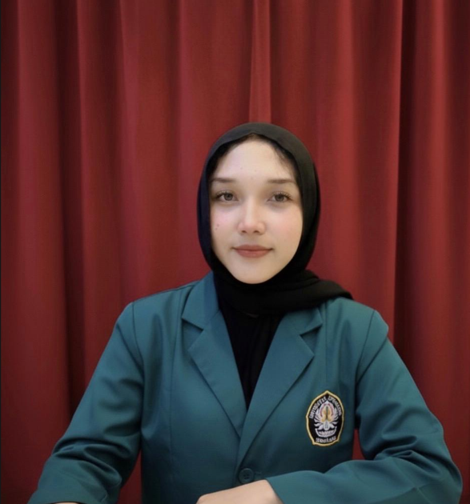

Saya adalah mahasiswa tingkat akhir D4 Teknologi Rekayasa Otomasi Universitas Diponegoro dengan rekam jejak kuat dalam perancangan sistem elektrikal dan otomasi. Terbukti mampu mengeksekusi proyek secara end-to-end, dari perancangan mekanik (Solidworks) hingga integrasi sistem kontrol (LabVIEW). Memiliki daya analitis yang tajam dan siap berkontribusi dalam optimalisasi proses, efisiensi operasional, serta continuous improvement di lingkungan manufaktur.
Tidak dapat melihat dokumen? Silakan unduh melalui tombol di bawah.
Download CV AsliMerancang desain 3D tangki dan boiler (Solidworks), serta rangkaian kontrol dan antarmuka monitoring (LabVIEW). Diimplementasikan sebagai modul pembelajaran resmi.
Merancang Rancang Bangun Sistem ATS pada Aerator Kolam Berbasis Mikrokontroler, termasuk skematik rangkaian utama dan wiring diagram detail.
Aktif sebagai Staff Muda Ekonomi Kreatif HIMATRO (2024-2025) serta Staff Publikasi, Dokumentasi, dan Desain di berbagai program kepemimpinan dan otomasi.